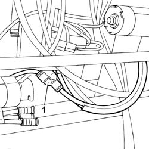
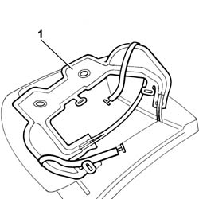

7045N11 FRONT SEAT CUSHION MASSAGE/LUMBAR ADJUSTMENT POCKET (1), LEFT OR RIGHT - R.R. WITH SEAT REMOVED
- Path
- Procedures > 70 FITTINGS > 7045 FRONT SEATS > 7045N COMFORT FRONT SEAT FUNCTIONS > 7045N11 FRONT SEAT CUSHION MASSAGE/LUMBAR ADJUSTMENT POCKET (1), LEFT OR RIGHT - R.R. WITH SEAT REMOVED
- Kind
- repair procedure (removal / refitting; the operation number is the code)
- Applies to
- all engines; all production periods
- Interactive page
- https://sloeber94.github.io/elrnDB-lThss/en/#/841003018
Applies to: all engines; all production periods
 Removing
Removing
 Refitting
RefittingOp. 7045A42 L/H OR R/H FRONT SEAT GUARD (ONE) - R+R
[left side and centre]
Op. 7045D21 TRIM OF ONE FRONT SEAT LH OR RH RR WITH SEAT REMOVED
Applies to: all engines; all production periods
1. Disconnect the air pipes for the cushion air bag.

Applies to: all engines; all production periods
1. Release the cushion air bag and remove it.

Applies to: all engines; all production periods
Refitting
RemovingPosition the air bag on the cushion.
Connect the air pipes for the cushion air bag.
Op. 7045D21 TRIM OF ONE FRONT SEAT LH OR RH RR WITH SEAT REMOVED
Op. 7045A42 L/H OR R/H FRONT SEAT GUARD (ONE) - R+R
[left side and centre]